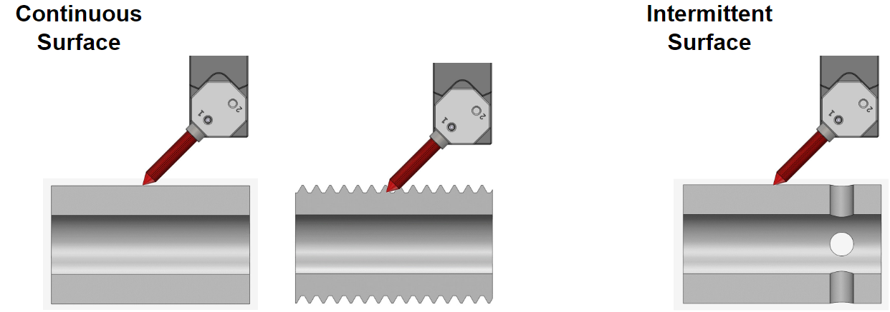

Machining Parameters
Standard machining parameters |
Starting machining parameters |
|
|---|---|---|
| Cutting speed (m/min) | 60 - 250 | 150 |
| Feed per revolution (mm/rev) | 0.1 - 0.5 | 0.3 |
| Depth of cut (mm) | 0.5 - 2.0 | For continuous surface: 1.0 |
 |
Maximum depth of cut varies depending on the Brush angle (Maximum Depth of Cut). |
When using the product on an intermittent surface, the maximum depth of cut is 0.5 mm. The figure below shows examples of continuous and intermittent surfaces.  |
|
The holder will collide with the workpiece and the tool may be damagedif the Brush is used when shorter than the usable bristle height (ℓ).
|
||||||||||||||||||||


- The direction of workpiece rotation may affect how burrs are removed. Rotate the workpiece in CW (clockwise) and CCW (counterclockwise) directions as needed.
- Minimize burr size as much as possible before using the product. If burrs are too large, tool wear will be accelerated and the tool life shortened.
- As shown in the figure below, burrs are more easily removed when they protrude vertically from the workpiece surface.

- If burrs remain, try:
- Decreasing the feed per revolution
- Increasing the number of passes